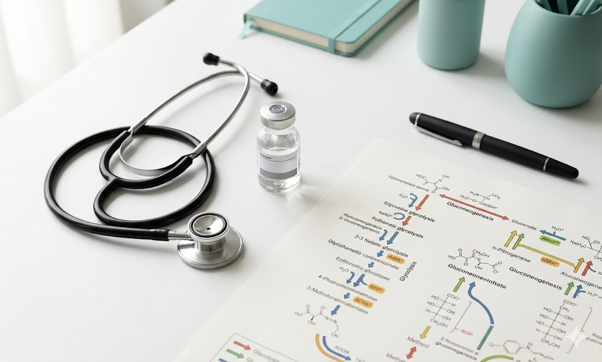
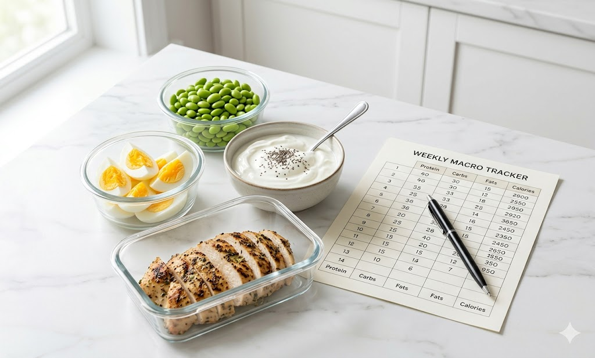
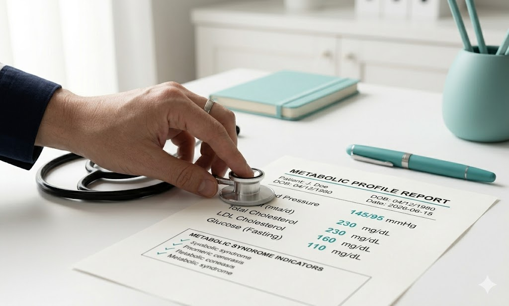
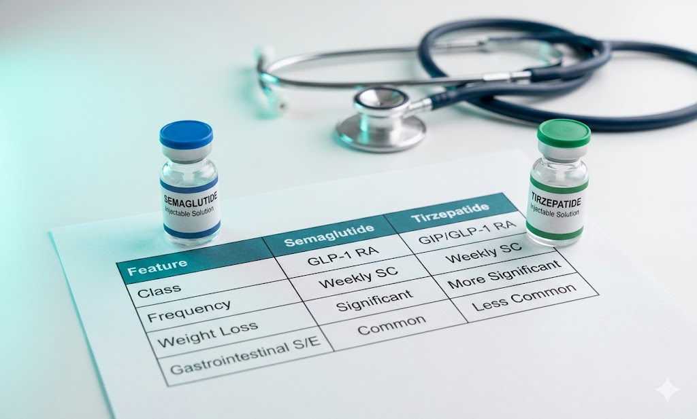
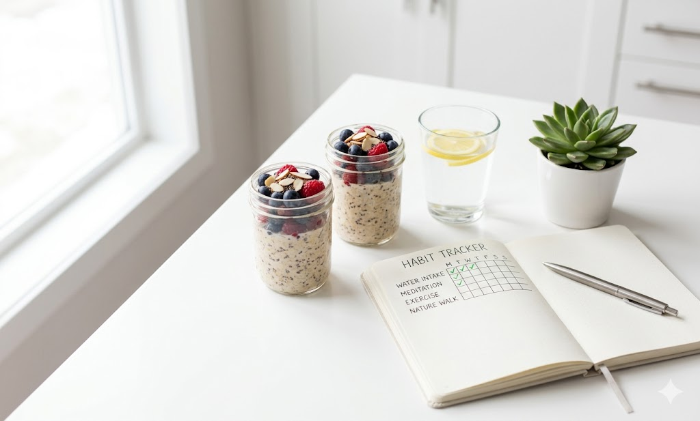

Clinical Insights
The latest research, success stories, and metabolic health guides.

Understanding GLP-1 and Metabolic Set Points
Oct 12, 2026 • By Dr. Elena Rostova
Discover how newer medications are helping patients redefine their biological baselines and finally break through weight loss plateaus.
Read More
Protein-Pacing for Muscle Retention
Oct 05, 2026 • By Marcus Chen, RD
When losing weight rapidly, preserving lean mass is critical. Here is how to structure your macros to protect muscle while on a GLP-1 program.
Read More
The Truth About Metabolic Syndrome
Sep 28, 2026 • By Dr. Elena Rostova
Metabolic syndrome affects 1 in 3 adults yet remains widely misunderstood. We break down what it means, how it's diagnosed, and what you can do about it.
Read MoreFrom 280 to 210 lbs — Jessica's Story
Sep 20, 2026 • By Sarah Jenkins, RN
After a decade of failed attempts, Jessica found a clinical approach that worked. Here is how she lost 70 lbs in 32 weeks and reversed her pre-diabetes markers.
Read More
Semaglutide vs Tirzepatide — Which is Right for You?
Sep 14, 2026 • By Dr. Elena Rostova
Both are clinically proven GLP-1 medications but they work differently. Our lead endocrinologist breaks down the key differences and how we choose the right one for each patient.
Read More
Building Healthy Habits After Weight Loss
Sep 07, 2026 • By Marcus Chen, RD
Reaching your goal weight is only the beginning. Our clinical dietitian shares the daily habits that help patients maintain their results long after completing the program.
Read MoreFrequently Asked Questions
All articles are authored by licensed medical professionals, endocrinologists, registered dietitians, and clinical coaches from the SlimSync clinical team.
We publish new research breakdowns, dietary guides, and clinical insights weekly to keep our patients informed of the latest updates in metabolic health.
Yes, absolutely. Our blog content is designed to be highly informative and referenced with peer-reviewed medical data, making it a great conversation starter with your doctor.